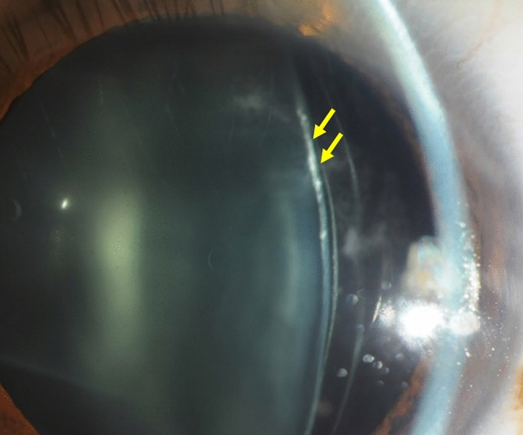
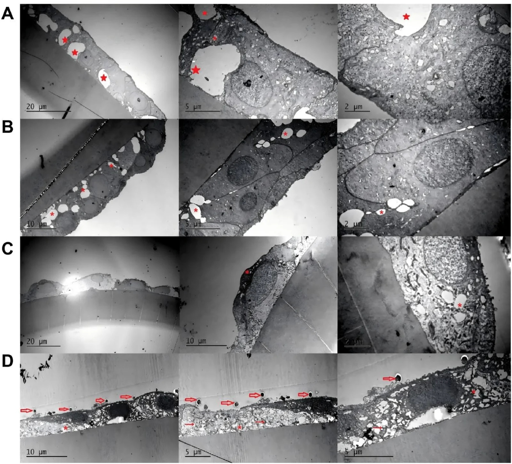
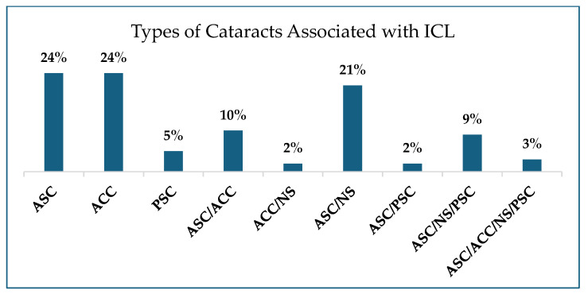
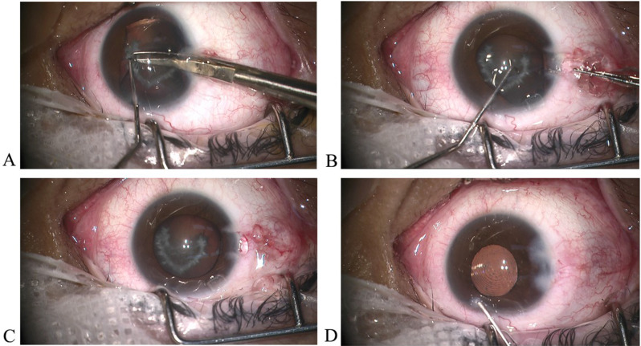
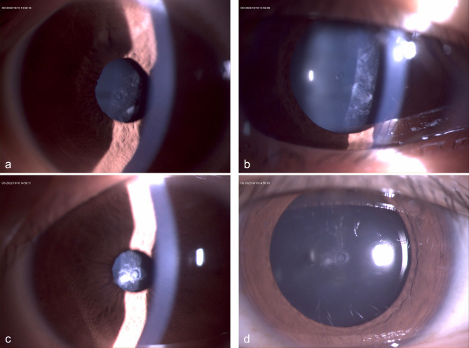

3247 — Đục bao trước sau ICL: khi "mờ mắt từ từ" ở người trẻ đã đặt thấu kính phakic / Anterior subcapsular cataract after phakic ICL
Tags: pattern:duc-bao-truoc pattern:duc-the-thuy-tinh pattern:co-xat-co-hoc pattern:vault-thap pattern:mo-mat-tien-trien vung:mat vung:the-thuy-tinh vung:tien-phong vung:the-mi protocol:slit-lamp protocol:AS-OCT protocol:Pentacam protocol:UBM protocol:sinh-trac-IOL protocol:phaco score:LOCS-III incidentaloma:khong
Mức chắc chắn (certainty): tổng hợp y văn (literature synthesis) — dựng từ các đoàn hệ lớn và ca có ảnh: 6.258 mắt ICL V4c và 1.208 mắt V4 theo dõi tới 15 năm (PMC13572004), 57 mắt tháo pIOL + phaco (PMC13235816), 44 mắt phaco sau ICL (PMC11312979), 38 mắt (PMID 28732607), 175 mắt tháo pIOL (PMID 35239580), 770 mắt tháo ICL (PMC7730447), 114 mắt/10 năm (PMID 31078536), 66 mắt/12 năm (PMC12010185), 118 mắt ICL có lỗ ở tuổi 45–65 (PMC8913835), ca vault 0 µm (PMC12486667), ca đục ngày 1 do bơm rửa (PMID 28823445), ca phẫu thuật có ảnh (PMC12057150). Nhóm không có bệnh nhân của mình; chỗ chưa đủ chắc ghi "chưa rõ". Không ghi tên tác giả — attribution = tạp chí + năm + PMCID/DOI.
Câu chốt: người trẻ đã đặt ICL (implantable collamer lens — thấu kính phakic hậu phòng) đến khám vì mờ mắt tăng dần nhiều tháng–nhiều năm, không đỏ, không đau. Đèn khe sau giãn đồng tử thấy đục trắng–xám dưới bao trước, thường bắt đầu ở ngoại vi rồi lan vào trục quang. Đây là đục bao trước (anterior subcapsular cataract, ASC) — biến chứng thường gặp nhất của ICL và là lý do tháo ICL phổ biến nhất. Ba số phải nhớ: ASC 2,32% ở ICL V4 so với 0,10% ở V4c (PMC13572004); 10,5% ở 10 năm, trong đó 3,5% có triệu chứng phải mổ (PMID 31078536); và tháo ICL + phaco đưa 80,6% mắt đạt CDVA ≤ 0,3 logMAR, 86,1% trong ± 1,00 D (PMC13235816). Điều quyết định không phải "đục hay không" mà là vault – vị trí haptic – mật độ tế bào nội mô – bệnh võng mạc cận thị cao, vì các yếu tố đó đổi cả thời điểm mổ lẫn công suất IOL.
1. Tổng quan bệnh học – cơ chế hình ảnh (TẠI SAO)
1.1 Giải phẫu: ICL nằm sát bao trước thể thủy tinh
- ICL là thấu kính hậu phòng – phakic: mặt sau tựa vào rãnh thể mi (ciliary sulcus) bằng hai footplate/haptic, mặt sau optic cách bao trước thể thủy tinh một khoảng gọi là vault. Khung vault 2026: thấp < 250 µm**, **đích 250–750 µm**, **cao > 750–1.000 µm, quá mức > 1.000 µm; < 100 µm hoặc chạm thể thủy tinh là đáng lo (PMC13749031).
- Vùng tiếp xúc cơ học không phải tâm optic mà là chu vi optic – chỗ optic gặp haptic, tương ứng ngoại vi bao trước. Vì vậy ASC sau ICL khởi đầu ngoại vi (ảnh dưới) rồi lan vào trung tâm — khác đục nhân (trung tâm) và đục dưới bao sau (trục quang).
- Haptic nằm trong rãnh thể mi, nên hình thái thể mi quyết định vault: ca 0 µm hai mắt có mỏm thể mi ngắn + footplate trượt một phần xuống rãnh trên UBM; thay ICL bằng cỡ lớn hơn vẫn 0 µm (PMC12486667).

*Đục bao trước vùng ngoại vi (mũi tên vàng) sau ICL, nhìn bằng ánh sáng ngược (retroillumination). Đây là vị trí tương ứng chu vi optic–haptic tì vào bao trước. Nguồn: Sci Rep 2020 (PMC7730447), Fig. 1, CC BY 4.0 — nguyên bản.*1.2 Ba con đường sinh bệnh — và vì sao hình ảnh lại "trắng, chậm, ngoại vi"
- Cơ học – mạn tính (chủ yếu): optic/haptic tì hoặc cọ lặp lại lên bao trước và biểu mô thể thủy tinh (lens epithelial cells, LEC). Phản ứng xơ hóa của LEC sinh ra fibronectin và collagen dưới bao. Mô xơ tán xạ ánh sáng mạnh hơn sợi thể thủy tinh trong suốt → trên đèn khe là đám trắng–xám; trên ánh sáng ngược là đốm tối trên nền đỏ cam (ánh sáng bị chặn, không tới được võng mạc). Vì là quá trình xơ hóa, ASC xuất hiện muộn (tháng–năm), không phải ngày 1.
- Chấn thương thủ tục – cấp tính: bơm rửa quá mạnh qua lỗ trung tâm của ICL thổi thẳng vào bao trước gây đục trắng lan tỏa ngay ngày 1 — loạt 11 mắt/8 bệnh nhân, 9 mắt phải tháo ICL, 8 mắt phaco; đổi kỹ thuật thì không còn ca mới (PMID 28823445). Đây là nguyên nhân do kỹ thuật, phòng được, và là lý do phải hỏi "đục xuất hiện lúc nào".
- Chuyển hóa – tế bào: siêu cấu trúc mô thể thủy tinh lấy trong lúc mổ cho thấy LEC tăng sinh nhiều lớp, lắng đọng fibronectin/collagen, ty thể bất thường (cristae dày, không bào quanh nhân) ở nhóm ASC (PMC13572004). Nghĩa là ngoài cọ xát còn có rối loạn chuyển hóa của LEC — giải thích vì sao cùng một vault mà mắt này đục nhanh, mắt khác đục chậm.

TEM biểu mô thể thủy tinh: A–B đục nhân (LEC một lớp/dày, không bào gian bào); C–D ASC — LEC dẹt một lớp, không bào quanh nhân, lưới nội bào hạt giãn, và collagen phủ mặt LEC (mũi tên đặc). Đây là bằng chứng xơ hóa dưới bao, không phải "vẩn đục do tuổi". Nguồn: Adv Ophthalmol Pract Res 2026 (PMC13572004), Fig. 5, CC BY-NC-ND 4.0 — nguyên bản webp, không đổi định dạng.1.3 Yếu tố nguy cơ và con số nền
- Tuổi lớn hơn lúc đặt ICL và tiền phòng nông (shallow anterior chamber depth, ACD) là yếu tố nguy cơ độc lập; cận thị siêu cao làm tăng biến chứng nói chung (PMC13572004). Đoàn hệ 12 năm xác nhận nhóm đục có vault thấp hơn và tuổi mổ cao hơn (p < 0,05) (PMC12010185).
- Vault thấp dự báo đục sớm: trong 44 mắt phaco sau ICL, vault 1 tuần sau đặt và vault 1 tuần trước phaco tương quan tuyến tính dương với thời gian tới lúc mổ đục (p = 0,0081 và p = 0,0154) — vault càng thấp, đục có triệu chứng càng sớm (PMC11312979).
- Loại ICL quan trọng: V4 (không lỗ) có đục thể thủy tinh 6,46% vs 0,16%, ASC 2,32% vs 0,10%, bilensectomy 3,89% vs 0,16% so với V4c (có lỗ) (PMC13572004).
- Tần suất thay đổi theo thời gian theo dõi: 10,5% ASC ở 10 năm, 3,5% có triệu chứng (PMID 31078536); 19,7% đục ở 10 năm (PMC12010185); 29% có đục, 16,1% ảnh hưởng thị lực sau 10,5 ± 3,5 năm (PMID 29394074); ở nhóm 45–65 tuổi đặt ICL có lỗ: 6,8% ASC không triệu chứng ngay sau mổ, 2,5% đục nhân có triệu chứng (PMC8913835).
- Tỷ lệ phải tháo: 1,0% (8/770 mắt) trong một đoàn hệ Nhật, trong đó 63% do đục tiến triển (PMC7730447); 3,8% (30/787) tháo/đổi ICL, 4 ca vì đục (PMC5141621); 44% ca tháo pIOL vì đục, 50,3% vì mất tế bào nội mô, thời gian sống trung bình của pIOL 12,9 ± 4,8 năm (PMID 35239580).
1.4 Vì sao "chờ đục chín" là sai ở mắt đã đặt ICL
- Vỏ bao xơ hóa làm tháo ICL khó hơn: ICL nằm sát bao; khi bao dày–xơ, tách ICL khỏi bao và tạo liên tục bao trước khó hơn, dễ rách bao và mất nhân vào dịch kính.
- Nhân càng cứng, năng lượng phaco càng cao trên mắt cận thị cao, tiền phòng nông, nội mô đã mỏng — đúng nhóm dễ mất bù nội mô. Đoàn hệ tháo pIOL cho thấy 4,6% (8/175) phải ghép giác mạc trong theo dõi (PMID 35239580).
- Vì vậy mục tiêu là phát hiện ASC khi còn khu trú + theo dõi ECD, không phải chờ thị lực giảm nặng.
2. Mẫu hình + chẩn đoán phân biệt theo vị trí (gamut)
2.1 Mẫu hình cần nhận
- Vị trí: dưới bao trước, ngoại vi trước (chu vi optic–haptic), có thể hình cung, hình vòng, hoặc "bông tuyết" (snowflake); một bên hay hai bên tùy mắt đặt ICL.
- Thời gian: ngày 1 (thể do bơm rửa/kỹ thuật) hoặc tháng–năm (thể cơ học–chuyển hóa). Trong ca 19 tuổi, ASC xuất hiện 19 tháng sau TICL cùng vault 0 µm (PMC12486667).
- Triệu chứng: mờ mắt từ từ, lóa/glare, giảm tương phản; không đau, không đỏ — khác UGH (đau–đỏ–hyphema) và khác viêm nội nhãn.
- Phân bố loại đục sau ICL (58 bệnh nhân): ASC đơn thuần 24%, ASC + đục nhân 21%, ASC + đục vỏ trước 10%, ASC + nhân + dưới bao sau 9%, ASC + dưới bao sau 2%, ASC + cả ba 3% — tức ASC có mặt trong 69% hồ sơ đục thể thủy tinh sau ICL (PMC11312979).

ASC (24%) và ASC phối hợp với các loại khác chiếm phần lớn; đục nhân đơn thuần cũng 24%, đục dưới bao sau đơn thuần chỉ 5%. Nguồn: J Clin Med 2024 (PMC11312979), Figure A1, CC BY 4.0 — nguyên bản.2.2 Gamut theo vị trí và bối cảnh
| Vị trí / bối cảnh | Nghĩ trước | Vì sao |
|---|---|---|
| Bao trước, ngoại vi, có ICL, vault thấp | ASC sau ICL | Điểm tì optic–haptic; xơ hóa LEC |
| Bao trước, lan tỏa, ngày 1 sau đặt ICL có lỗ | ASC do bơm rửa qua lỗ trung tâm | Chấn thương thủy lực lên bao (PMID 28823445) |
| Trung tâm, màu vàng–nâu, không ranh giới rõ | Đục nhân (nuclear sclerosis) | Xơ cứng sợi trục, thường tuổi lớn |
| Sau, trục quang, hình chén | Đục dưới bao sau (PSC) | Corticoid, đái tháo đường, viêm |
| Vỏ trước hình nan hoa (spokes) | Đục vỏ (cortical) | Mất nước, chấn thương |
| Màng trắng–fibrin ngày 1–3, tiền phòng viêm | TASS/fibrin | Độc chất, không phải đục bao |
| Bọt khí/OVD tồn lưu | Giả đục | Di động, tự tan |
| Đục bao trước + tiền sử xạ vùng mắt | Đục do xạ | Liều xạ, thời gian ủ bệnh |
- Mnemonic vị trí "3 lớp – 3 câu hỏi": (1) đục trước hay sau bao? (2) trung tâm hay ngoại vi? (3) có tiếp xúc cơ học (ICL, chấn thương) không? Trả lời 3 câu này phân được 80% gamut trước khi cần xét nghiệm.
3. Bảng so sánh phân biệt (ma trận đối chiếu)
| Thực thể (entity) | Hình ảnh điển hình | Chốt vào (rule-in) | Chốt loại (rule-out) | Gợi ý xác nhận |
|---|---|---|---|---|
| ASC sau ICL (cơ học) | Đục trắng–xám dưới bao trước, ngoại vi, hình cung/bông tuyết; ICL in situ, vault thấp | Vị trí ngoại vi đúng chu vi optic + ICL + vault thấp/0 µm | Đục trung tâm vàng–nâu, bao trước trong → nghĩ đục nhân | Đèn khe giãn đồng tử + AS-OCT/Scheimpflug đo vault, so ảnh cũ; theo dõi ECD |
| ASC do bơm rửa (ngày 1) | Trắng lan tỏa ngay sau mổ, thị lực giảm sớm, không đau | Khởi phát ngày 1 + tiền sử bơm rửa qua lỗ trung tâm | Đục xuất hiện muộn tháng–năm → thể cơ học | Hỏi kỹ thuật mổ; loại trừ TASS (không fibrin, không viêm tiền phòng) |
| Đục nhân (nuclear sclerosis) | Vàng–nâu trung tâm, mất trong suốt đều, không đổi theo ánh sáng ngược | Màu nhân + LOCS III NO/NC tăng + tuổi | Đục khu trú ngoại vi, có ICL → ASC | LOCS III (NO1–6, NC1–6); AS-OCT không phân độ thay được |
| Đục dưới bao sau (PSC) | Hình chén trước bao sau/trục quang, soi ngược thấy rõ | Vị trí sau + tiền sử corticoid/ĐTĐ/viêm | Đục ngoại vi trước → ASC | Đèn khe đồng tử giãn; OCT hoàng điểm nếu phù |
| Đục vỏ do chấn thương | Nan hoa, khe nứt bao, có thể vỡ bao | Tiền sử chấn thương + khe/rách bao | Bao trước liên tục, không chấn thương → ASC | Sinh hiển vi + AS-OCT bao; B-scan nếu không thấy đáy mắt |
| TASS/fibrin | Màng fibrin, tế bào tiền phòng, có thể giả mủ, ngày 1–3 | Viêm tiền phòng + fibrin + khởi phát sớm | Không viêm, chỉ đục bao → ASC | Đáp ứng corticoid; cấy âm |
| OVD/bọt khí tồn lưu | Bọt tròn di động, tan trong vài ngày | Di chuyển theo tư thế, tự hết | Đục cố định, không đổi → thực thể | Theo dõi 1–7 ngày |
| Đục do xạ | Đục bao trước + khô mắt, tiền sử xạ | Tiền sử xạ + liều + thời gian ủ | Không xạ, có ICL → ASC sau ICL | Hồ sơ xạ trị; so ảnh trước xạ |
4. Protocol chụp/đo + hệ phân độ + quyết định mổ
4.1 Đo gì, bằng gì, ngưỡng nào
| Bước | Dụng cụ | Số đo / ngưỡng | Ý nghĩa |
|---|---|---|---|
| Đèn khe + giãn đồng tử | Sinh hiển vi | Mô tả vị trí, hình thái, LOCS III | Phát hiện ASC ngoại vi; không giãn đồng tử dễ bỏ sót |
| Ánh sáng ngược | Retroillumination | Đốm tối trên phản xạ đỏ | Xác nhận tán xạ ánh sáng do mô xơ |
| Đo vault | AS-OCT (Casia, Avanti) hoặc Scheimpflug (Pentacam) | < 250 µm thấp; 250–750 đích; > 1.000 quá mức; < 100/chạm = đáng lo (PMC13749031) | Vault thấp → ASC sớm (PMC11312979) |
| Rãnh thể mi/haptic | UBM 35–50 MHz | Mỏm thể mi ngắn, footplate trượt, nang thể mi | Giải thích vault 0 µm dù đã đổi cỡ (PMC12486667) |
| Nội mô | Soi nội mô (specular) | ECD và tốc độ mất/năm | Chỉ định tháo pIOL khi mất nhanh hơn dự kiến (PMID 38242162) |
| Sinh trắc IOL | IOLMaster 700/Argos + Pentacam | AL, K, ACD, độ sâu tiền phòng | Công thức sau khúc xạ; ICL không đổi AL/K |
| Hậu đoạn | OCT hoàng điểm ± B-scan | Cận thị cao: thoái hóa hoàng điểm, CNV, ERM | Tránh quy mọi mờ mắt cho đục |
- Không có ngưỡng "mật độ đục" chuẩn hóa cho ASC sau ICL trên Scheimpflug/Pentacam: densitometry cho thang tùy ý, dùng để theo dõi xu hướng cùng một mắt, không dùng để chẩn đoán hay so giữa hai mắt. Chẩn đoán vẫn là đèn khe + bối cảnh ICL/vault.
4.2 Lịch theo dõi mắt đã đặt ICL
- 1 ngày, 1 tuần, 1 tháng, 3–6 tháng, 12 tháng, sau đó hằng năm: thị lực, khúc xạ, IOP, đèn khe giãn đồng tử, AS-OCT vault, ECD (PMC10417808; PMC13572004).
- Vault thấp < 250 µm hoặc có dấu hiệu chạm: khám 3–6 tháng/lần, đo lại vault cùng máy, UBM nếu vault không giải thích được; giáo dục bệnh nhân báo ngay khi mờ/lóa tăng.
- ECD giảm nhanh hơn dự kiến (không có ngưỡng tuyệt đối thống nhất): hội chẩn tháo pIOL trước khi có đục nặng (PMID 38242162; PMID 35239580).
4.3 Quyết định: theo dõi hay bilensectomy (tháo ICL + phaco + IOL)
flowchart TD
A[Mắt đã đặt ICL, mờ mắt tăng dần] --> B[Đèn khe giãn đồng tử + AS-OCT vault + ECD]
B --> C{Đục bao trước?}
C -->|Không| D[Soi hậu đoạn: thoái hóa cận thị, CNV, ERM, PCO]
C -->|Có| E{Triệu chứng ảnh hưởng thị lực?}
E -->|Không| F[Theo dõi 3-6 tháng: vault, ECD, ảnh màu]
E -->|Có| G{Vault thấp hoặc ECD giảm nhanh?}
G -->|Có| H[Bilensectomy: tháo ICL + phaco + IOL trong bao]
G -->|Không rõ| I[UBM rãnh thể mi + hội chẩn]
H --> J[Hậu phẫu: kháng sinh, corticoid, kiểm tra khúc xạ 1 tháng]
F --> K[Đục tiến triển hoặc ECD giảm tiếp] --> H
Ba mốc quyết định: (1) ASC có triệu chứng → mổ; (2) vault 0–100 µm/chạm thể thủy tinh dù chưa đục → theo dõi sát, cân nhắc tháo khi ECD giảm hoặc đục tiến triển; (3) đục ngày 1 do bơm rửa → đánh giá lại kỹ thuật, không chờ "tự khỏi".
4.4 Kỹ thuật bilensectomy — các điểm không được bỏ
- Trước mổ: sinh trắc khi ICL còn trong mắt (ICL không ảnh hưởng AL/K nhưng có thể ảnh hưởng chất lượng đo), dùng công thức sau khúc xạ (Barrett True-K/Universal II; nhóm 57 mắt báo Barrett Suite dự đoán công suất đáng tin, 86,1% trong ± 1,00 D — PMC13235816). Đích khúc xạ ở cận thị cao thường để lại −0,50 đến −0,75 D để tránh lệch về viễn (ca PMC12057150).
- Vào tiền phòng – bảo vệ nội mô: OVD đủ, không bơm thẳng vào bao; nếu ICL có lỗ trung tâm, tránh dòng bơm rửa mạnh xuyên lỗ (đúng cơ chế ca đục ngày 1 — PMID 28823445).
- Lấy ICL: cắt đôi ICL bằng micro scissors trong tiền phòng rồi gắp ra, hoặc đẩy ra qua vết mổ rộng vừa đủ; không kéo haptic qua vết mổ nhỏ (nguy cơ rách bao, tổn thương mống mắt). Hình dưới cho thấy trình tự cắt ICL → lấy ICL → thấy ASC → phaco → đặt IOL.
- Sau khi lấy ICL: CCC ~5 mm, phaco, IOL trong bao; bảo vệ zonule (cận thị cao, tiền phòng nông) và bao sau. FLACS khả thi nhưng bọt cavitation bị giữ dưới ICL có thể làm nucleotomy không hoàn toàn (PMID 26856431; PMID 27070235).
- Kết cục tham chiếu: 80,6% CDVA ≤ 0,3 logMAR, 86,1% ± 1,00 D, PCO 11/57, bong võng mạc 1/57 (PMC13235816); 82% ± 1,00 D, 57,9% ± 0,50 D, PCO 39,5% (PMID 28732607); 70% UDVA trong 1 dòng, 43% ± 0,25 D, 69% ± 0,50 D (PMC11312979); safety index 1,08 (PMC13572004) và 1,50 (PMC11312979).

Trình tự: A cắt đôi ICL bằng micro scissors; B lấy ICL qua vết mổ; C thấy ASC dưới bao trước, mở CCC ~5 mm rồi phaco; D đặt IOL trong bao. Nguồn: BMC Ophthalmol 2025 (PMC12057150), Fig. 3, CC BY-NC-ND 4.0 — nguyên bản, không cắt/ghép.5. Biến thể bình thường và cạm bẫy
- Vault 0 µm không đồng nghĩa phải mổ ngay: ca 19 tuổi có vault 0 µm hai mắt + ASC; mắt trái thay ICL lớn hơn vẫn 0 µm, mắt phải theo dõi không can thiệp (PMC12486667). Quyết định dựa trên triệu chứng + ECD + tiến triển đục, không chỉ con số vault.
- Đục "ngoại vi" là bình thường ở mắt đặt ICL? Không. Đục bao trước ngoại vi là dấu sớm của ASC, khác vòng phản xạ ánh sáng ở chu vi optic (ánh sáng viền, không phải mô đục) — phân biệt bằng ánh sáng ngược và so ảnh cũ.
- Cạm bẫy 1 — không giãn đồng tử: ASC ngoại vi nằm ngoài vùng đồng tử 3 mm, khám thường quy bỏ sót; phải giãn đồng tử và ghi ảnh màu/retroillumination.
- Cạm bẫy 2 — gọi "đục nhân do tuổi" ở người 40–50 tuổi có ICL rồi chờ: nhân càng cứng, phaco càng nhiều năng lượng trên mắt cận thị cao/nội mô mỏng; ASC khu trú + ICL là bối cảnh khác.
- Cạm bẫy 3 — YAG bao sau "điều trị đục": mắt còn thể thủy tinh thật, không có PCO; YAG đục bao sau không điều trị ASC và có thể làm rách/tổn thương bao–thể thủy tinh. Chỉ YAG khi đã phaco và có PCO.
- Cạm bẫy 4 — bỏ sót bệnh hậu đoạn cận thị cao (satisfaction of search): trong 6.258 mắt V4c có thoái hóa hoàng điểm cận thị 0,38%, CNV 0,24%, bong võng mạc 0,04% (PMC13572004); bong võng mạc 10 năm 1,71% vs 1,25% ở nhóm không mổ (PMID 36730449). Luôn OCT hoàng điểm + soi đáy mắt ngoại vi trước khi quy mọi mờ mắt cho đục.
- Cạm bẫy 5 — đục ngày 1 bị coi là "phù giác mạc/OVD": đục trắng sau bao ngay ngày 1 kèm giảm thị lực là ASC do bơm rửa, không phải OVD; OVD di động và tan, ASC cố định (PMID 28823445).
- Cạm bẫy 6 — tính IOL theo khúc xạ hiện tại khi đục đã nặng: khúc xạ lúc đục không dùng được cho công thức sau khúc xạ; phải dùng khúc xạ trước ICL/trước đục + AL/K hiện tại (PMC13235816; PMC12057150).
6. Tự lượng giá — Blind Quiz
Ca 1 — Nữ 34 tuổi, cận thị −11,00 D, đặt ICL 6 năm, mờ mắt từ từ 8 tháng, không đau.
- Gợi ý: không đỏ mắt, IOP bình thường, ICL đúng vị trí, vault đo được 180 µm.
- Câu hỏi: (1) Mô tả vị trí và hình thái đục. (2) Ba chẩn đoán phân biệt. (3) Dấu hiệu nào chốt nguyên nhân?
Bấm để hiện đáp án (findings + chẩn đoán)
- Dấu hiệu: đục trắng–xám dưới bao trước, ngoại vi, hình cung, thấy rõ nhất bằng ánh sáng ngược (mũi tên vàng); bao trước còn liên tục; không có fibrin/tế bào tiền phòng.
- Chẩn đoán: ASC sau ICL do cọ xát cơ học — vault 180 µm thuộc nhóm thấp (< 250 µm), đúng vị trí chu vi optic–haptic.
- Phân biệt: đục nhân (trung tâm, vàng–nâu), PSC do corticoid (sau, trục quang), đục vỏ do chấn thương (nan hoa, rách bao).
- Nguồn ảnh: Sci Rep 2020 (PMC7730447), Fig. 1, CC BY 4.0.
Ca 2 — Nữ 19 tuổi, cận thị cao, TICL hai mắt 19 tháng, mờ cả hai mắt; vault 0 µm hai bên.

- Gợi ý: UBM cho mỏm thể mi ngắn, footplate trượt một phần; thay TICL trái bằng cỡ lớn hơn.
- Câu hỏi: (1) Hình thái đục? (2) Vì sao vault 0 µm tái diễn dù đổi cỡ? (3) Có nên thay ICL phải không?
Bấm để hiện đáp án (findings + chẩn đoán)
- Dấu hiệu: (a–b) mắt phải ASC dạng bông tuyết ở đồng tử thường và giãn; (c–d) mắt trái đục đậm vùng đồng tử.
- Cơ chế: cấu trúc thể mi bất thường (mỏm ngắn) + footplate trượt làm ICL luôn nằm sát bao trước; đổi sang ICL lớn hơn không sửa được vì vấn đề là giải phẫu thể mi, không phải cỡ ICL.
- Xử trí: mắt trái thay ICL vẫn 0 µm → cần bilensectomy khi đục ảnh hưởng thị lực; mắt phải theo dõi vì chưa có chỉ định tuyệt đối — quyết định theo triệu chứng + ECD + tiến triển.
- Nguồn ảnh: BMC Ophthalmol 2025 (PMC12486667), Fig. 1, CC BY-NC-ND 4.0.
Ca 3 — Nam 39 tuổi, cận thị cao, đã PRK rồi đặt ICL, nay ASC hai mắt; mổ tháo ICL + phaco + IOL hai thì cách 2 tuần.
- Gợi ý: đích khúc xạ −0,50 đến −0,75 D, IOL TECNIS Symfony ZXR00, theo dõi 3 tháng bằng AS-OCT/defocus curve.
- Câu hỏi: (1) Vì sao chọn đích cận thị nhẹ? (2) Trình tự lấy ICL–phaco–IOL? (3) Đo công suất IOL dựa trên dữ liệu nào?
Bấm để hiện đáp án (findings + chẩn đoán)
- Đích −0,50 đến −0,75 D: ở mắt cận thị cao + sau khúc xạ, để lại cận thị nhẹ giúp giảm nguy cơ lệch về viễn và tăng hài lòng khi IOL đa tiêu cự/giãn tiêu cự; đây là lựa chọn ca, không phải khuyến cáo tuyệt đối.
- Trình tự: A cắt đôi ICL bằng micro scissors → B lấy ICL → C thấy ASC, CCC ~5 mm, phaco → D đặt IOL trong bao; bảo vệ nội mô/zonule/bao sau.
- Công suất IOL: dùng AL/K hiện tại + khúc xạ trước ICL (hoặc trước khi đục tiến triển) theo công thức sau khúc xạ; nhóm 57 mắt cho thấy Barrett Suite dự đoán tốt (86,1% ± 1,00 D) (PMC13235816).
- Nguồn ảnh: BMC Ophthalmol 2025 (PMC12057150), Fig. 3, CC BY-NC-ND 4.0.
7. Câu hỏi nghiên cứu & điểm chưa đồng thuận (tính đến 11/2026)
[Tranh cãi] Ở mắt vault 0–100 µm chưa có đục, tháo ICL dự phòng có giảm ASC so với theo dõi?
- Đã biết: vault < 100 µm/chạm thể thủy tinh được xem là đáng lo; ca vault 0 µm hai mắt đã có ASC ở 19 tháng và tái diễn 0 µm dù thay ICL lớn hơn, gợi ý yếu tố giải phẫu thể mi (PMC12486667; PMC13749031).
- Chưa rõ: chưa có RCT so tháo sớm với theo dõi ở nhóm chưa có triệu chứng; ngưỡng vault nào đủ để mổ dự phòng chưa thống nhất.
- Hướng nghiên cứu: đoàn hệ tiến cứu có vault chuẩn hóa bằng AS-OCT + UBM, outcome thời gian tới ASC có triệu chứng và ECD.
- Nguồn: PMC12486667 (2025); PMC13749031 (2026).
[Khoảng trống] Công thức IOL nào chính xác nhất sau tháo ICL ở mắt cận thị cao đã phẫu thuật khúc xạ?
- Đã biết: các loạt nhỏ cho kết quả tốt với Barrett Suite (86,1% ± 1,00 D, 57 mắt) và 82% ± 1,00 D (38 mắt), nhưng không có so sánh trực tiếp giữa các công thức.
- Chưa rõ: ảnh hưởng của vết PRK/RK cũ, độ dài AL, và vùng trung tâm giác mạc lên sai số; chưa có ngưỡng chọn multifocal/EDOF theo bệnh hoàng điểm cận thị.
- Hướng nghiên cứu: nghiên cứu diagnostic accuracy đa trung tâm, so Barrett True-K vs Kane vs ASCRS trung bình, outcome MAE và % trong ± 0,50 D.
- Nguồn: PMC13235816 (2026); DOI 10.1016/j.jcrs.2017.03.032 (2017).
[Khác biệt thực hành] Mổ ASC sau ICL ngay khi có triệu chứng hay chờ "đục đủ chín"?
- Đã biết: pIOL tồn tại trung bình 12,9 năm; 44% tháo vì đục, 50,3% vì mất tế bào nội mô; sau tháo, ECD nhóm đục giảm 2,27%/năm, và 4,6% phải ghép giác mạc (PMID 35239580). Mất ECD nhanh hơn dự kiến là chỉ định tháo pIOL (PMID 38242162).
- Chưa rõ: ngưỡng ECD tuyệt đối và mức đục tối thiểu để mổ khác nhau giữa trung tâm; chưa có dữ liệu so mổ sớm với chờ về CDVA cuối cùng và biến chứng.
- Hướng nghiên cứu: registry theo ECD, vault, LOCS III, so thời điểm mổ với outcome CDVA 1 năm, PCO, bong võng mạc.
- Nguồn: DOI 10.1097/j.jcrs.0000000000000920 (2022); DOI 10.1055/a-2209-5251 (2024).
Bài liên quan chéo
- 3238 – UGH sau ICL (viêm – glôcôm – xuất huyết tiền phòng) — cùng mắt đặt ICL, khác mặt bệnh (cọ xát → hyphema/IOP), dùng chung UBM/AS-OCT.
- 3237 – PXF + góc đóng: LPI hay lấy thể thủy tinh — đo ACD/thể thủy tinh trước phaco.
- 1935 – Đục thể thủy tinh sau MIGS — đục bao trước "không bào" ngày 1 sau can thiệp: phân biệt với ASC thật.
- 6214 – Đục thể thủy tinh do xạ trị retinoblastoma — đục bao trước do xạ, bối cảnh khác.
- 1504 – Đục thể thủy tinh cực sau — phân độ và chỉ định phaco.
- 1480 – Đục thể thủy tinh sau bóc màng ERM — tính IOL và phối hợp phẫu thuật ở mắt đã mổ.
- 400 – Tổng quan Mắt & thị giác
Không dùng để chẩn đoán độc lập khi chưa có người hướng dẫn.